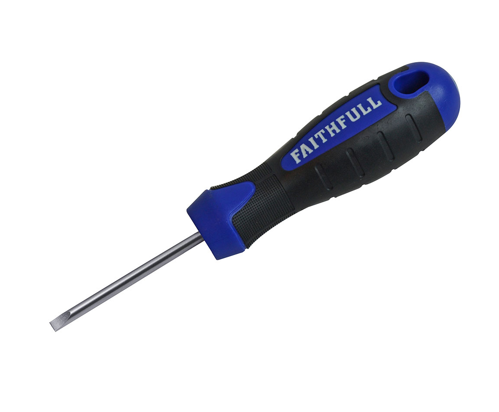
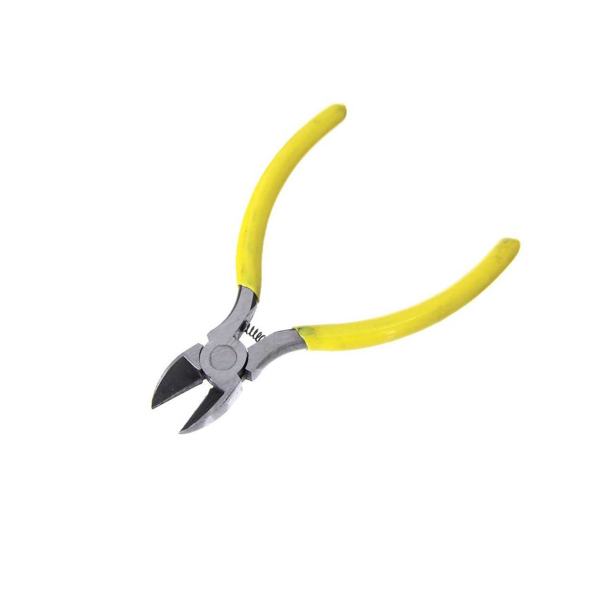
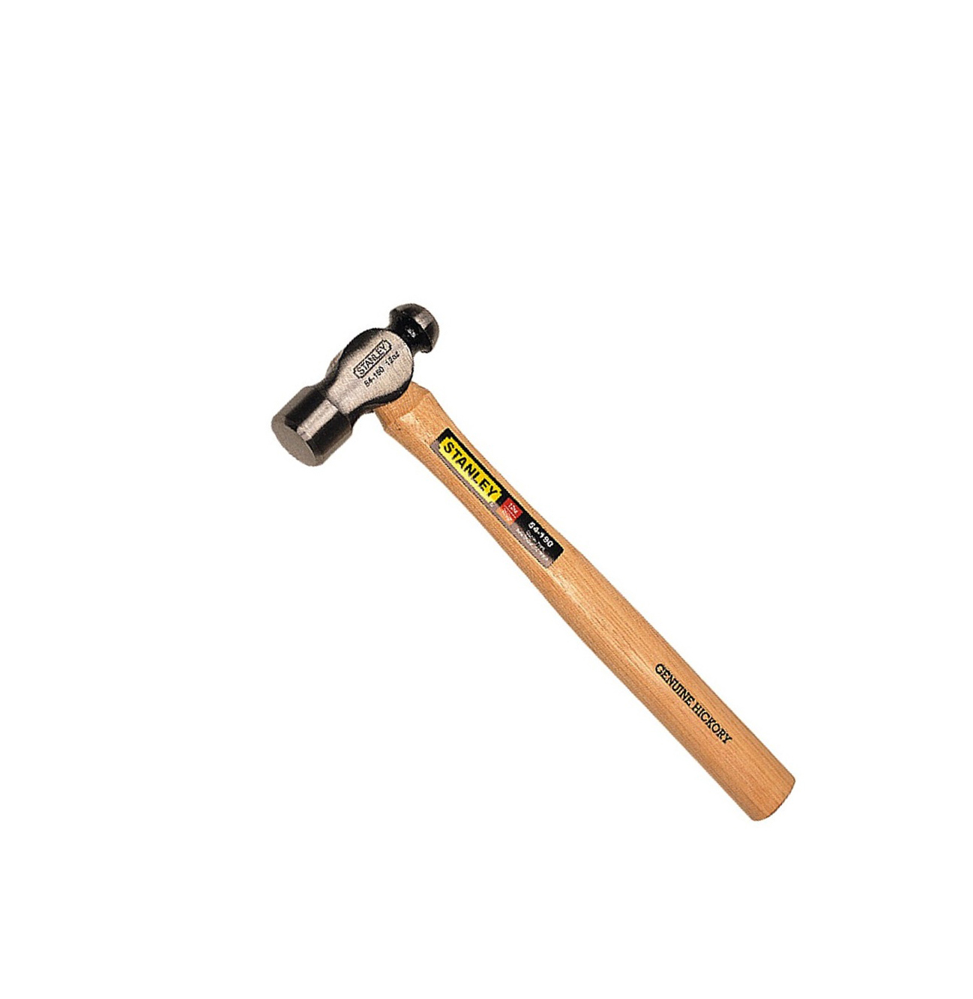

Philip Screwdriver
A Phillips screwdriver has a head with pointed edges in the shape of a cross.
Phillips screw heads allow a tighter fit than a flat head screw,
which is why most factories and handymen use them.

Bradawl
A bradawl is used to make indentations in wood or other materials in order to ease the insertion of a nail or screw. The blade is
placed across the fibres of the wood.
Longnose Plier
Long Nose pliers are both cutting and holding pliers used by artisans, jewelry designers,
electricians, network engineers and other tradesmen to bend, re-position and cut wire.

Standard Plier
Pliers are a type of hand tool. They allow the user to firmly grip an object – usually something like a nail or wire –
so it can be tightened or loosened, twisted or cut.

Wirecutter Plier
Diagonal cutting pliers are used for cutting wire and small pins in areas that cannot be reached by larger cutting tools. Because the cutting edges are diagonally offset about 15 degrees,
these can cut objects flush with a surface.

Ballpeen Hammer
A ball peen hammer is a hammer with two ends on the head, one that is round and the other flat. Sometimes called a machinist's hammer,
a ball peen is a good choice for working with metal.

Claw Hammer
A claw hammer is a hammer primarily used in carpentry for driving nails into or pulling them from wood. Historically, a claw hammer has been associated with woodworking, but is also used in general applications.

Manual Hand Drill
A hand drill is a manual tool that converts and amplifies
circular motion of the crank into circular motion of a drill chuck.

Wood Handsaw
A hand saw for wood should be able to cut both hard and softwood, as well as plywood.
Hand saws are ideal for most general sawing jobs around the home.

Hacksaw
A hacksaw is the best hand tool for cutting metal such as steel, copper, brass, or aluminum. It is also the plumber’s choice for sectioning PVC pipes.
Mallet Hammer
Mallets are used in various industries, such as upholstery work, and a variety of other general purposes.
They give a softened strike with a positive drive.
Woodchisel
Chisel hammers and wooden mallets are the tools we use to strike the end of the handle to allow you to split, chop and pare wood.

Wrench
An adjustable spanner is an open-ended wrench with a moveable jaw.
can grip fasteners of all sizes, thanks to their moveable jaw.
Pipe Wrench
A pipe wrench is any of several types of wrench that are designed to turn threaded pipe and pipe fittings for assembly (tightening) or disassembly (loosening).

Groove-Joint Plier
The lower jaw can be moved to a number of positions by sliding along a tracking section under the upper jaw. An advantage of this design is that the pliers can adjust to a number of sizes without the distance in the handle growing wider.